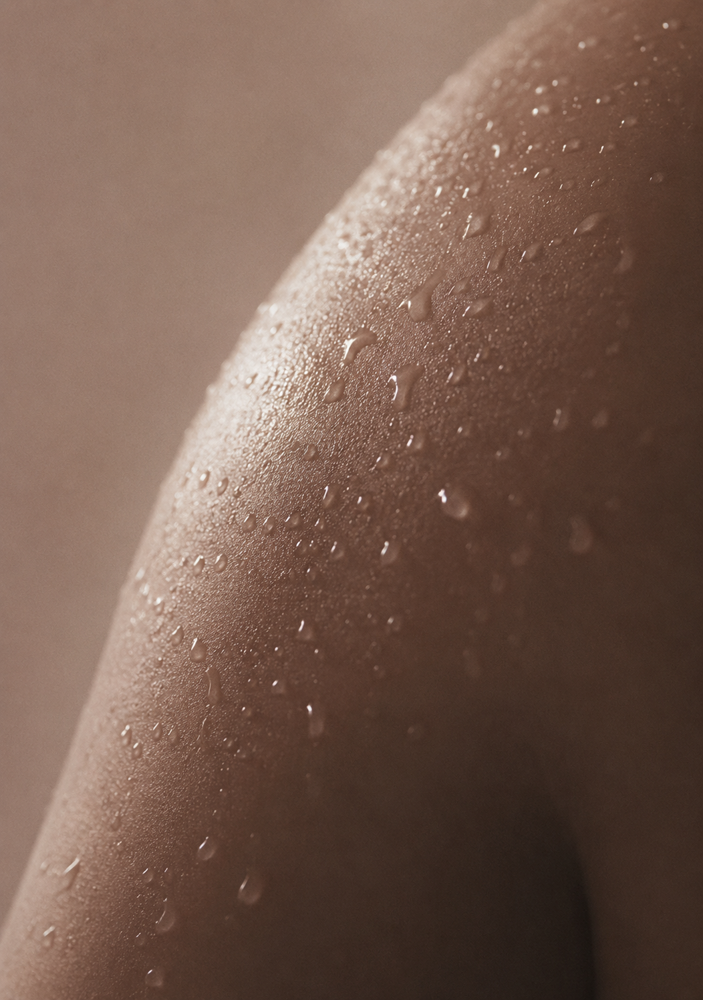
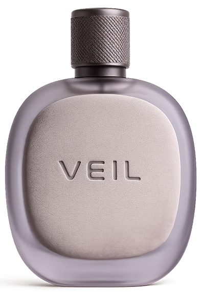
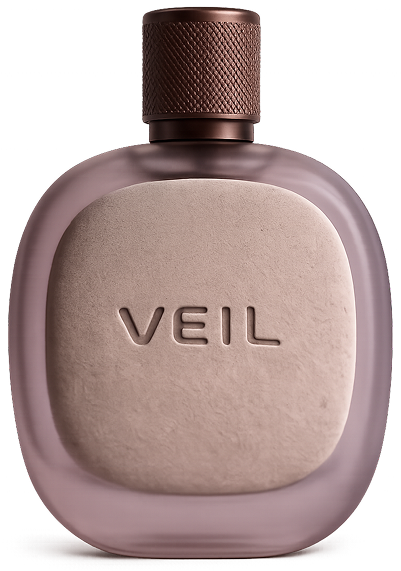
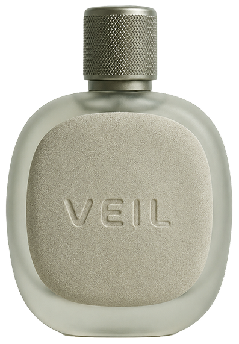

FLEX
움직이기 직전의 차가운 긴장감
FLEX
움직이기 직전의 차가운 긴장감
Movement Collection
States in texture.
움직임 이전의 긴장,
움직임 속의 열기,
그리고 이완 이후의 여운.
몸이 경험하는 세 가지 감각의 상태를
향으로 번역한 VEIL의 첫 번째 컬렉션입니다.
FLEX
움직이기 직전의 차가운 긴장감

PULSE 심박이 올라가는 피부의 열감 DRIFT
움직임 후 조용하게 남는 이완
DRIFT
움직임 후 조용하게 남는 이완



차갑고 선명하게 시작됩니다.
금속적인 공기감이 피부를 스칩니다.
피부 온도와 함께
부드럽게 스며듭니다.
긴장이 풀리며
잔향만이 남습니다.
개인에 따라 차이가 있을 수 있습니다.